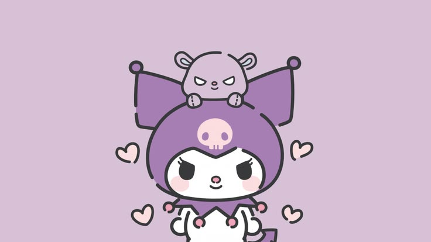

I Love Kuromi!
my little corner of the internet for my favorite Sanrio character

Okay so I have to be honest, I did NOT expect to obsess this hard for a cartoon rabbit-devil thing but here we are. Kuromi is my favorite Sanrio character by a mile, mostly because she's chaotic, a little grumpy, and unapologetically herself — plus she wears purple, which is literally my favorite color, so it kind of felt like fate when I found out about her.
I first got into Kuromi because my cousin and I would always watch cartoon and YouTube shows about Sanrio characters and we would associate each other as Kuromi and My Melody.
Why I love her
- She's the "villain" of the Sanrio universe but honestly she's just misunderstood (relatable)
- The purple and black color combo is just *chef's kiss*
- She has a whole rivalry with My Melody and I live for the drama
- That skull-shaped hood is one of the best character designs Sanrio has ever done
- She's not afraid to be a little mean, unlike every other overly sweet mascot out there
- She resonates with my aesthetics
- She looks good with purple
- She is nostalgic
- She is cute
My top 5 reasons Kuromi is the best Sanrio character
- The purple devil-bunny hood design is just iconic
- She rides a motorcycle, need I say more? hwahahajshdlakjshd
- Her attitude actually has personality, she's not just "cute for the sake of cute"
- Her friendship (and rivalry) with Baku the little mouse on her head
- She looks amazing on literally every type of merch, from bags to plushies to socks. hehe \(^o^)/
Kuromi merch on my wishlist
| Item |
Price I found online |
| Miniso - Kuromi plush (medium) |
PHP 810 |
| Kuromi enamel pin |
PHP 250 |
| Kuromi hoodie |
PHP 1,450 |
| Kuromi sticker pack |
PHP 120 |
Learn more about her
Read about Kuromi
Check out Kuromi merch on the official Sanrio site